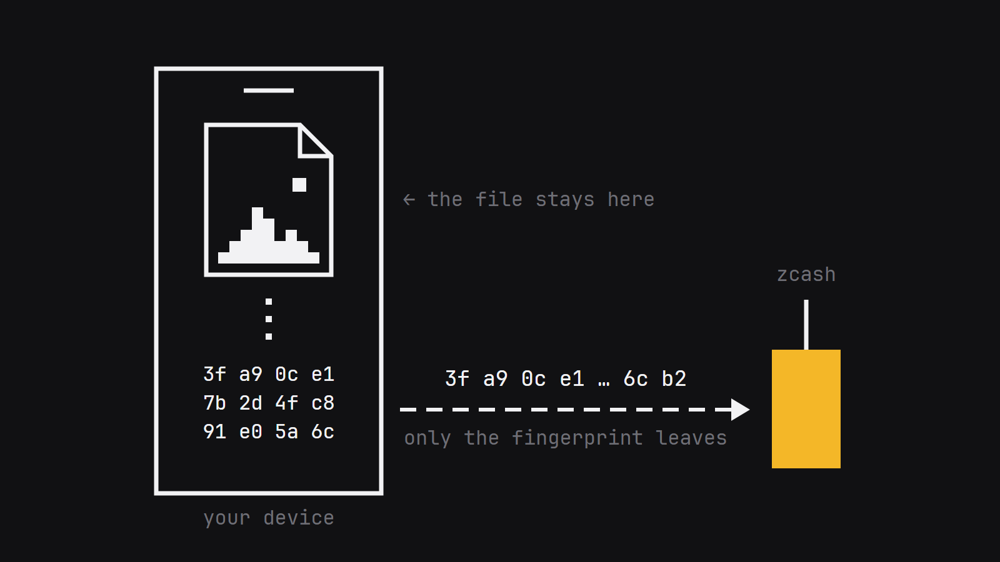
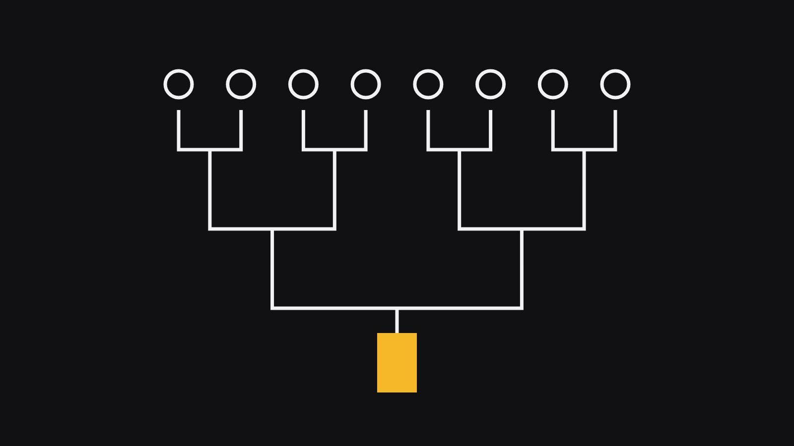
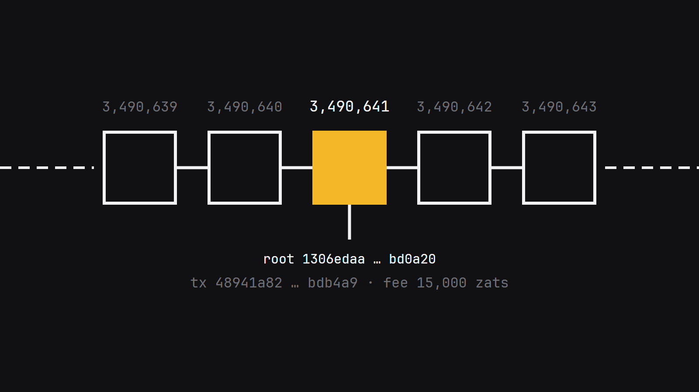
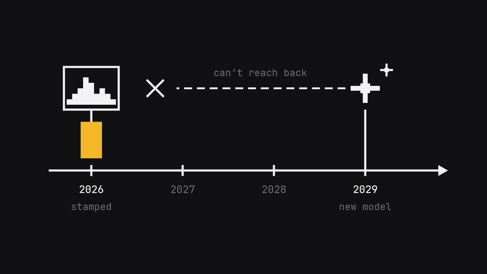
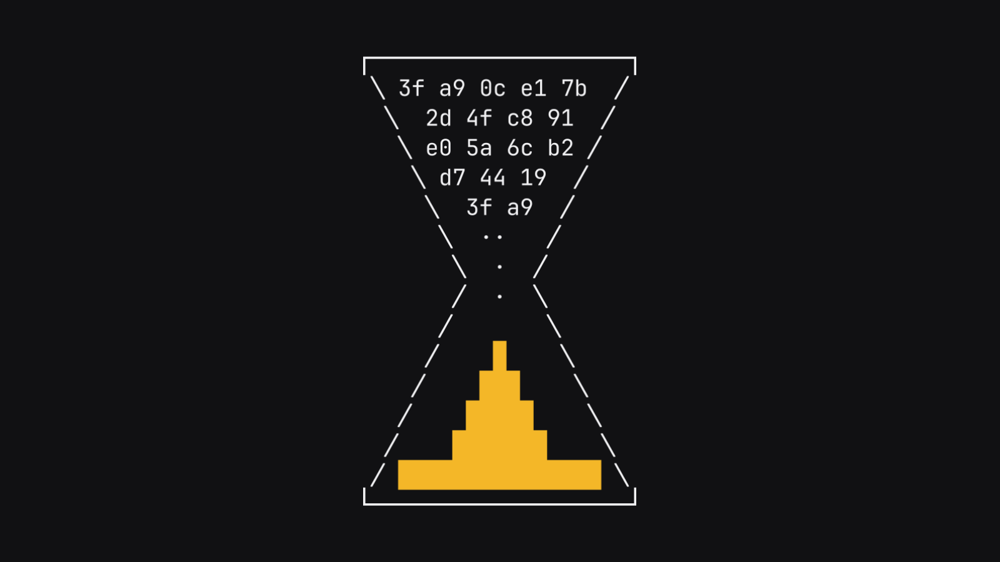

Proof of Time — X article kit
Go top to bottom. Hit Copy on each block, paste it into the X article editor, then move on. The images get Copy image (paste straight in) or Download (upload it).
Text keeps its bold and bullets when pasted. If a section heading pastes as plain text, highlight it in X and set it to Heading.

In a couple of years, any photo, contract, song or screenshot could have come out of a model in about four seconds.
When that day comes, one question matters more than any other:
Did this file exist before the tools that could have faked it?
Proof of Time $TIME answers that question, with math anyone can check.
What it does
Drop a file on the page. That’s it.
- If that exact file has been stamped before, it shows you when.
- If it’s new, one button stamps it.
The stamp goes onto the Zcash blockchain and gets buried deeper with every block that follows. Once it’s there, it’s there for good.
Your file stays on your device
{kind=link}

Your phone or laptop turns the file into a fingerprint: a 64-character code that only that exact file produces. Change one pixel and you get a completely different code.
Only the fingerprint gets sent. The file stays with you. Your photos, contracts and unreleased tracks stay private. Stamp your tax return if you want, and all that goes out is a string of letters and numbers.
A thousand stamps for the price of one
{kind=link}

About every 75 seconds, which is one Zcash block, every fingerprint in the queue gets folded into a tree. Pairs combine, then those pairs combine, until you’re left with one root. That root goes on chain.
A thousand stamps, one transaction, one fee. That’s how stamping stays free.
Your receipt holds the path from your fingerprint up to that root, so anyone can follow it and check it.
Check it yourself
When your receipt comes back, your own browser checks the math before it shows “verified.”
There’s also a standalone checker you can run on your own machine, against your own file and receipt.
The roots go on chain as transparent transactions, where anyone can read them. Every receipt checks out straight against the Zcash chain, forever.
Live on Zcash mainnet
{kind=link}

Real chain, real anchors. The first one:
- Block 3,490,641
- Transaction
48941a8258e6fc7797dcc29fdc7c523835ce136182c59258e4c18d2cafbdb4a9 - Fee: 15,000 zatoshis, a fraction of a cent
Paste it into any block explorer and you’ll find the root sitting right there in the transaction.
What a stamp proves
{kind=link}

A stamp proves this exact file existed by this block. Locked in, publicly, with a date on it.
That matters more every month. A photo stamped in 2026 was already around in 2026, before whatever model ships in 2029. The record only moves forward.
Who should be stamping right now
- Photographers and artists: your originals, before someone claims them
- Builders: code, designs and ideas, dated before the copycats show up
- Journalists: footage, while it’s still new
- Anyone who signs things: contracts, drafts, agreements
- Anyone who wants receipts: “I called it” posts, now with math behind them
What’s next
Next up is stamping on autopilot: a folder watcher that stamps every screenshot the moment you take it, and a hook that stamps every code commit. Your proof will already be there when you need it.
{kind=link}

Start the clock
Time only runs one way. Stamp it today, and today is on the record for good.
Drop a file. Get a timestamp. Keep the proof.
$TIME
CA: Ga1VE5ud6vw2D6maXVV5GVAfYQT3uMmVQxityg9Kpump
👉 proofoftime.fun
What’s the first file you’d stamp? Tell me below.